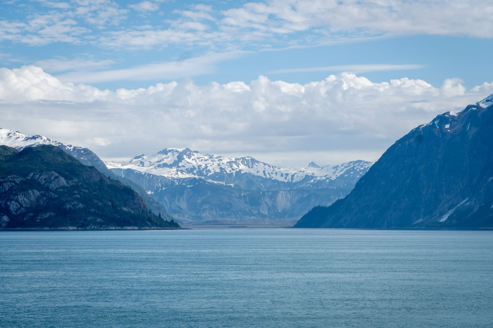
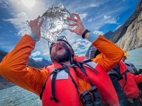

The Phenomenology & Experiential Education Lab
PEXE Lab is a phenomenology and experiential education lab — a working space for two questions: what is it to teach and what is it to learn? 'Experiential' is a word worth reclaiming with careful attention. That recovery is phenomenological work that we do slowly, carefully, and grounded in lived experience through essays, podcasts, and ongoing research. Come think alongside us.
New here? Start at the Trailhead →Professor, West Chester University
His guiding question — what is it to teach? — leads into the lived experience of being a philosophical educator, advising doctoral students, and navigating the encounter with AI in higher education. His work draws on Heidegger's hermeneutic phenomenology.

EdD Candidate, West Chester University
His guiding question — what is it to learn? — grounds a dissertation exploring how we learn when we are entangled in ecological settings. His work draws on Merleau-Ponty, Serres, Heidegger, Ahmed, and Abram to argue that entangled learning is ontological transformation.